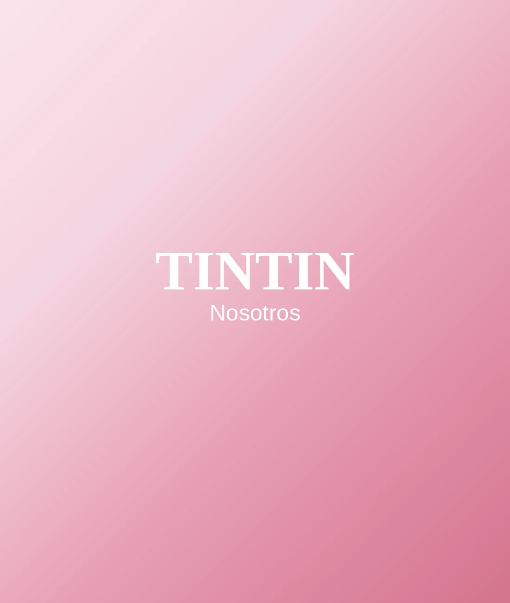

Conocenos
`r`nTe contamos nuestra historia con todo el amor que ponemos cada día en lo que hacemos.
`r`nTe contamos nuestra historia
`r`n`r`n `r`n Fundada el 8 de septiembre de 2024`r`n `r`n`r`n`r`n Tintin Accesorios & Relojes nació de una pasión muy simple pero muy poderosa: el amor por los accesorios femeninos. Somos una tienda online paraguaya especializada en joyería de acero inoxidable, relojes elegantes, bolsos modernos y todo lo que una mujer necesita para completar su look con brillo y personalidad.`r`n
`r`n`r`n`r`n Nuestra colección incluye relojes SKMEI y otras marcas de lujo asequible, collares, aros, brazaletes, armcuff, earcuffs, gafas de sol, pulseras, tobilleras, anillos y los joyeros más lindos para guardar todos tus tesoros. Cada pieza es elegida con cuidado para que refleje el estilo moderno, femenino y con carácter que nos define.`r`n
`r`n`r`n`r`n Creemos que toda mujer merece brillar cada día — sin importar la ocasión, el presupuesto o el estilo de vida. Por eso ofrecemos productos de excelente calidad a precios accesibles, con la calidez y la atención personalizada que solo una tienda boutique puede dar.`r`n
`r`n`r`n`r`n Nuestra misión es hacer que cada mujer se sienta hermosa, segura y con mucha personalidad. Nos dedicamos a acompañarte en cada momento especial — desde el look del día a día hasta esa noche que quiere ser inolvidable.`r`n
`r`n`r`n`r`n Trabajamos con envío el mismo día para pedidos antes de las 11 hs en zona central, y hacemos envíos a todo el país.`r`n
`r`n`r`nCon amor, Bárbara Ruiz.
`r`n`r`n
`r`nPor qué lo hacemos
`r`n`r`n Creemos que brillar no debería ser un lujo reservado para pocas. Por eso elegimos cada pieza pensando en que cualquier mujer, en cualquier momento de su día, pueda sentirse hermosa y segura sin gastar de más.`r`n
`r`n`r`n Detrás de cada pedido hay una persona real revisando que todo llegue perfecto — no una góndola automática. Esa atención cercana es la que nos distingue de una tienda más.`r`n
`r`n`r`n Queremos ser esa boutique de confianza a la que volvés no solo por los accesorios, sino por cómo te hacemos sentir cada vez que comprás.`r`n
`r`n